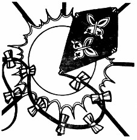

Biraz zaman almıştı, ancak Sturm tarafından Palanthas'dan Sancrist'e gönderilen mesaja cevap gelmişti. Pratik (pekala, çoğu zaman pratik) uçan geminin mucidi Stutts, Sturm'e arkalı önlü on altı büyük dosya kağıdı boyutunda bir cevap göndermişti. Görünüşe göre Wingover, Sighter ve diğerleri sonunda Bulutların Efendisi'nin gövdesini geleneksel suda yüzen bir gemi olarak kullanarak Boşver Dağı'na varmışlardı. Gnom Teknolojisinin Büyük Meclisi'nin maceralarıyla ilgili verdiği karar otuz cildi kaplıyordu.
İroni şu ki," diye yazmıştı Stutts, Sturm'e, "Lunitari'de geçirdiğimiz zaman boyunca aya ait hiçbir toprak, kaya ya da bitki parçası getirmeyi başaramadık. Bütün değerli örnek koleksiyonlarımızı gemiyi hafifletmeye çalışırken geride bıraktık. Elimizde sadece tuttuğumuz notlar olduğu için, Büyük Meclis 'Kanıtlanamadı' hükmünü verdi. Sighter çılgına döndü, ama ben o kadar rahatsız olmadım. Ben bunları yazarken. Bulutların Efendisi Numara II, Boşver Dağı'nın yamaçlarında şeklini alıyor. Bu seferki geminin dört kanat takımı, iki hafif hava torbası ve...
Sturm mektubu bir gülümsemeyle çevirdi. Geriye kalan bütün sayfalar, gnom'ların bir sonraki yolculuklarında yanlarına neler alacaklarından bahsediyordu. Mektubun sadece son satırları ilgi çekiciydi:
Eğer siz ve Bayan Kitiara bize tekrar eşlik etmek isterseniz lütfen on gün içinde, kışın gündönümü gelmeden Sancrist'e gelin. O zaman Lunitari'ye gidiyor olacağız. Cutwood, Solinari'ye gitmek istiyordu, ama bu fikri reddedildi. Hâlâ Lunitari hakkında öğrenecek çok şeyimiz var. Bunun yanı sıra da hâlâ Bellcrank'a ait kanıtlar bulma şansımız da mevcut...
Mektup Stutts'ın gnom adının yazılı olduğu birkaç satırla imzalanmıştı.
Sturm sayfaları bir kenara koydu. "İyi yolculuklar," dedi yüksek sesle.
Palanthas'da kaldığı hanın hizmetçisi onu duymuş ve masasına gelmişti. "İstediğiniz bir şey mi var?" diye sordu. Kızın adı Zerla'ydı, kıvırcık sarı saçlı ve sıcak gülüşüyle güzel bir kızdı. Sturm'e Tika'yı anımsatıyordu, ama Tika'dan yaklaşık on yaş daha büyüktü.
"Hayır, teşekkür ederim," dedi Sturm.
"Uzun zamandır Palanthas'da mısınız?" diye sordu kız.
"Birkaç haftadır."
"Burada kalmayı düşünüyor musunuz?"
"Aslında şu sıra gitmeyi düşünüyordum."
Zerla etkileyici bir şekilde kaşlarını çattı. "Umarım benim yüzümden değildir!"
"Hayır. Güneyde yapılacak işlerim var," dedi Sturm.
"Bir kız mı?"
Aklına Tervy geldi, ama Sturm'ün en önemli görevi babasının izlerini takip etmekti. Bu da Yüce Ermiş Kulesi'ne gitmek demek oluyordu. Merinsaard'la karşılaştıktan sonra biraz dinlenip, kafasını toplamak için Palanthas'a gelmişti. Burada ise bazı şövalyelerin gizli bir toplantı amacıyla Yüce Ermiş Kulesi'nde toplandıkları söylentilerini duymuştu. Babasına ait izleri orada bulabileceğinden emindi.
Sturm daldığı gündüz düşünden uyandığında Zerla onunla konuşuyordu. "Yakışıklı olanlar genellikle kapılmıştır," diyordu Zerla. Hizmetçi tatlı elma şarabının durduğu kadehi kaldırarak masayı sildi. "Evli misiniz?"
"Ne? Hayır, değilim."
Hizmetçinin yüzü parladı. "Nerelisiniz?"
"Solamniya," dedi Sturm.
"Ben de öyle düşünmüştüm! Miğferinizi ve bıyığınızı farkettim. Siz bir şövalyesiniz, öyle değil mi?" Sturm öyle olduğunu itiraf etti. "Büyükbabam bana, şövalyelerin ülkeye göz kulak oldukları ve adaleti sağladıkları eski günlere ait hikayeler anlatırdı. Keşke daha önce yaşasaydım. Şövalyeleri güzel atları üzerinde, parlatılmış zırhlarıyla, insanlara iyilik yaptıkları günleri görmek isterdim." Zerla'nın yüzü kızardı. "Özür dilerim. Çok fazla konuşuyorum."
"Önemli değil," dedi Sturm. "Söylediklerin beni mutlu ediyor. Halkın çoğunun Tarikat'ı unuttuğunu ya da ondan nefret ettiğini düşünüyordum." Sturm elma şarabını bitirip masanın üzerine iki Solace gümüş parası koydu. "Bozukluk senin için," dedi.
"Teşekkürler!" Zerla kadehi kaldırdı ve paraları masadan aldı.
Sturm handan ayrılarak öğleden sonra güneşinin altına çıktı. Şehirde oyalandığı günlerde deniz yoluyla başka haberler de gelmişti. Diğer krallıklardaki garip yağmacıların hikayeleri gittikçe çoğalıyordu. Sturm, Yüce Ermiş'e gittiğinde diğer şövalyelere anlatacak çok fazla şeyi olmayacaktı.
Ama burada, Palanthas'da tehdit oldukça uzaktaymış gibi görünüyordu. Çocuklar sokaklarda oynuyor, yük ve el arabaları iskeleden getirdikleri malları dükkanlara ve pazarlara taşıyorlardı. Şehrin sakinleri iyi besleniyor ve iyi giyiniyorlardı. Evet, savaşın tehdidinin Palanthas'daki halkın çoğunun hayatında etkili bir yeri yoktu.
Sturm yüksekteki sokaktan rıhtımı dolduran beyaz yelkenlileri görebiliyordu. Gnom'lar orada mıydı, diye merak etti. Yüksek Zirve adındaki parlak beyaz bir elf gemisi burunun açıklarına demirlemiş miydi? Sturm bunu öğrenecek kadar uzun kalamayacaktı. Diğer olaylarla uğraşarak zaten çok fazla vakit kaybetmişti. Şövalye isminin sorumluluğunu yüklenme zamanı gelmişti. Görevinin sorumluluğu da Sturm'ün giydiği zırh kadar ağırdı. Babasının zırhı ve Brightblade kılıcı yanındaydı. Sturm sağ elini eyerin üzerine koyarken gözlerinin iyice parlatılmış zırhı üzerinde oyalanmasına izin verdi. Derin bir nefes alarak sokaktan aşağı yürüdü.
Yüce Ermiş'e giden yol güneydeydi. Tanis'e, Flint'e ve Solace'daki tüm dostlarına veda edeli neredeyse bir yıl olmuştu.
Ve Tervy.
Ve tekrar güney. Abanasinya ve Solace. Zamanı geldiğinde, eski dostları Son Yuva Hanı'nda toplanıyor olacaklardı. Ona ve Kitiara'ya ne olduğunu duymak isteyeceklerdi. Onlara nasıl söyleyebilirdi? Tanis'e nasıl açıklayabilirdi? Peki ya kardeşlerine? Sturm'ün bile anlayamadığı bir şeyi onlar anlayabilirler miydi? Bir sürü soru Palanthas'ın güneşli sokaklarını yürürken Sturm'ü iyice bunalttı.
Bir bulut güneşin önüne geçtiğinde Sturm yukarıya baktı. O buluttan daha koyu bulutlar geliyordu. Sturm çatıların üzerinden bağırabilirdi, ama Palanthas ona kulak asmayacaktı. Hayat güzeldi, neden savaş için endişelenilsindi ki? Dağlar yüksek değil miydi? Rıhtımda silahlı ve hazır kadırgalarla devriye gezilmiyor muydu? Palanthas güvendeydi, kesinlikle.
Ama dağlar ve savaş gemileri kötülük için engel değildi. Sinsi gücün tohumu her kalpte, her hırsta ve nefrette yatıyordu. Kara ve deniz yalnızca üzerinde ticaret rüzgarları gibi fikirlerin uçuştuğu yollardı. Ve şimdi gökyüzü de açıktı. Gnom'lar bunu kanıtlamıştı.
Bulut hareket etmeye devam etti. Sturm gözlerini güneşin parlaklığından korumak için eliyle gölgeledi ve çarpan kanatların sesini duymak için etrafı dinledi.